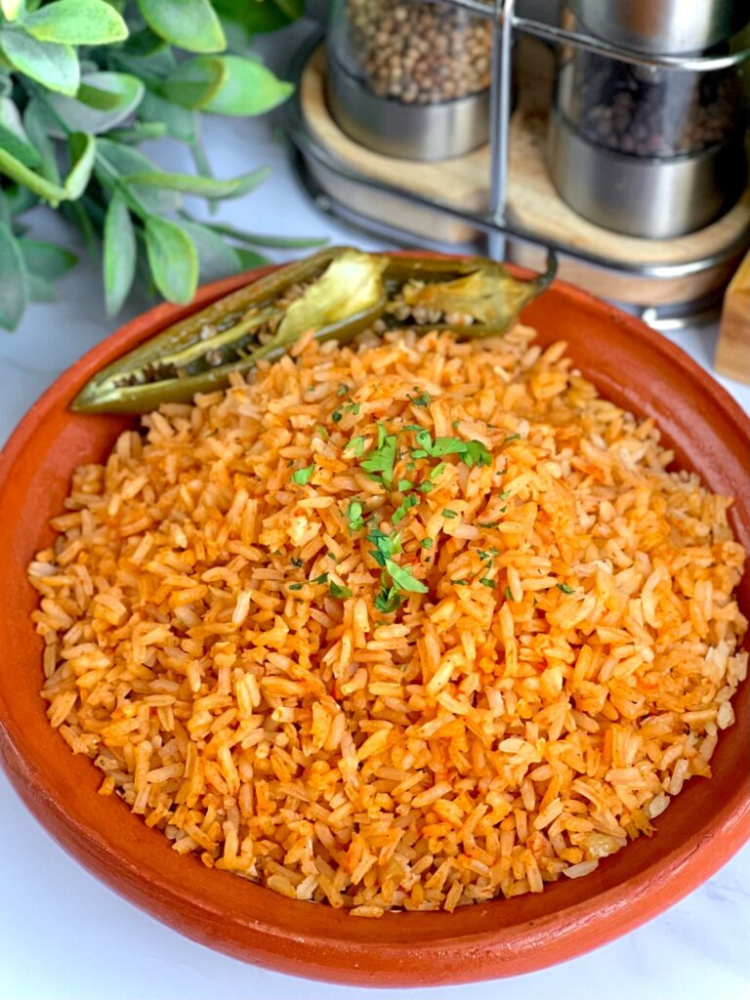

Mexican Rice

Description
This is going to be a recipe my mom gave me for making Mexican Rice.
This is mostly from memory but so far my moms rice is the best one I have had.
Ingredients:
- 2-3 Tomatoes
- 1 Garlic clove
- 1/4 of an Onion
- Water
- Chicken Bouillon
- Tomato Bouillon
- Salt
- Uncooked Rice
- Vegetable Oil
Cooking Steps
- 1. Cut the tomatoes into quarters and if you have a full Onion, cut out about a quarter of it.
- 2. Place the peeled garlic clove, tomatoes, and onion in the blender. Add water until it covers the top of the ingredients. Add a bit of salt as well
- 3. Blend on high or 5-7 range for about 1 min.
- 4. Next, heat up the oil in a pan on medium high heat. Once the oil is hot, add 1 cup of uncooked rice and cook it until it is all evenly browned.
- 5. Once rice is golden brown, add in the blended sauce you made. Then you will add in a bit more water to fully cover the rice.
- 6. Now add both chicken bouillon and the tomato bouillon to taste(don't really have exact measurements for this lol). Stir the rice a bit.
- 7. Keep on medium to high heat until most of the liquid is evaporated. Once most of the liquid is gone, lower the heat to low and let sit until the rest of the liquid is gone.
- 8. Turn off the heat and let it sit. Enjoy!